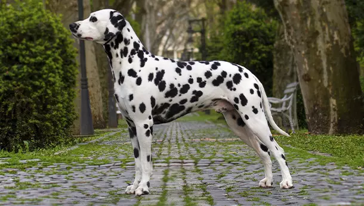

Presentación

El Dálmata es una raza de tamaño mediano-grande, distintiva por su pelaje corto, denso y blanco, cubierto por sus famosas manchas negras o color hígado. Posee un cuerpo atlético, simétrico y de líneas elegantes, con una gran resistencia física que le permite recorrer largas distancias con un paso rítmico y coordinado.
Personalidad
Los Dálmatas son perros extremadamente enérgicos, inteligentes y extrovertidos que necesitan mucha actividad física y estimulación mental. Son compañeros leales y protectores con su familia, aunque pueden mostrarse algo reservados con los extraños. Su naturaleza curiosa y juguetona los convierte en perros ideales para personas con un estilo de vida muy activo.
Origen
Aunque sus raíces exactas son antiguas, la raza debe su nombre a la región de Dalmacia. Históricamente, fueron famosos como "perros de carruaje", cuya función era correr junto a los caballos para protegerlos y abrir paso. Esta herencia les ha otorgado una afinidad natural con los caballos y una resistencia física legendaria que conservan hasta hoy.
Salud
El Dálmata suele tener una esperanza de vida de entre 11 y 13 años. Es una raza generalmente sana, pero posee una genética única que puede predisponerlos a la formación de cálculos renales y a la sordera hereditaria (unilateral o bilateral). Por ello, es vital realizar revisiones veterinarias periódicas y mantener un control estricto sobre su hidratación.
Aseo
Su pelaje corto es muy fácil de mantener, pero mudan pelo de manera constante durante todo el año, por lo que se recomienda un cepillado frecuente para controlar la caída. No tienen un fuerte "olor a perro" y son bastante limpios por naturaleza. Es importante revisar sus uñas regularmente y limpiar sus orejas para evitar infecciones, dada su forma caída.
Nutrición
Debido a su metabolismo urinario único, los Dálmatas requieren una dieta específica, preferiblemente baja en purinas, para evitar problemas de salud. Es fundamental que siempre tengan acceso a abundante agua fresca y realizar varias comidas pequeñas al día. Un plan nutricional equilibrado ayudará a mantener su musculatura potente y su pelaje brillante.